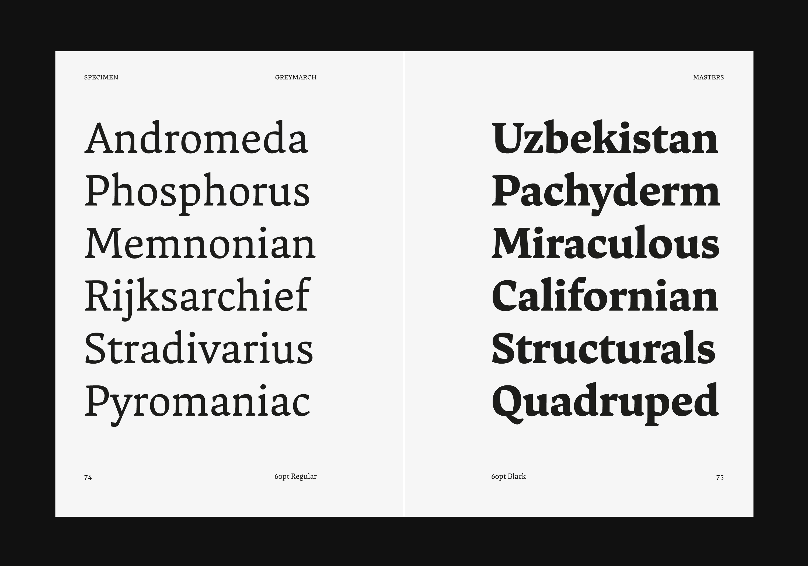
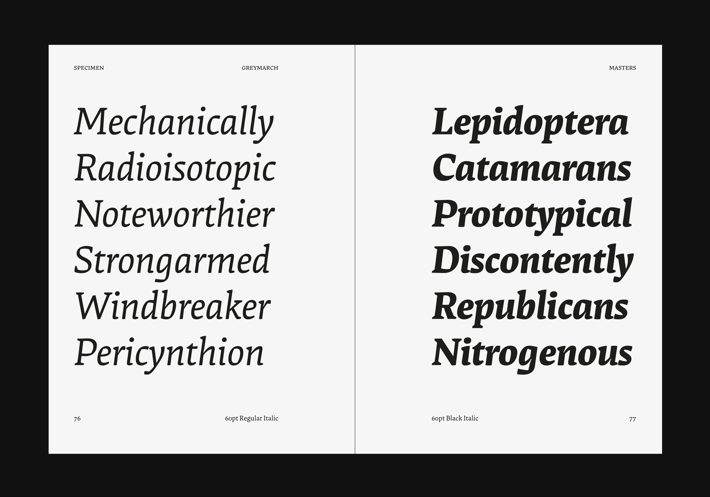

A workhorse serif typeface for editorial design (2019)
The final project for my MA studies at TypeMedia. Greymarch is a serif based on humanist calligraphy, modernised and adapted to work in a print/editorial design context. I created eight styles (four interpolated), with an extended latin character set and small caps.

Upright Styles · The Regular and Black weights of Greymarch.

Italic Styles · The Regular Italic and Black Italic styles of Greymarch.